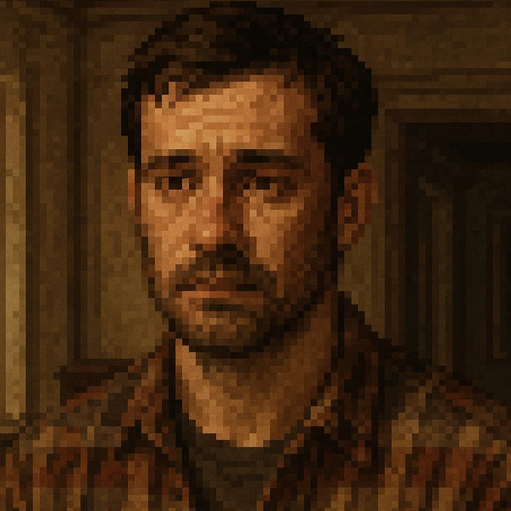
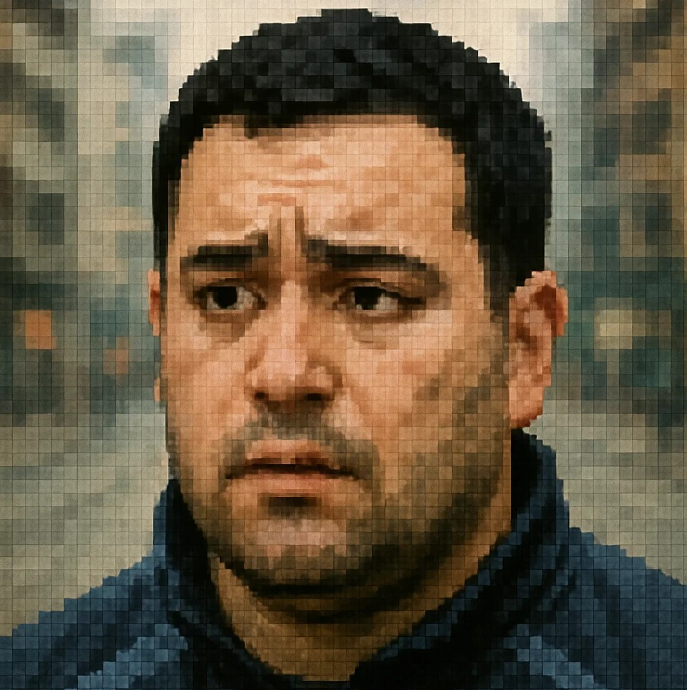
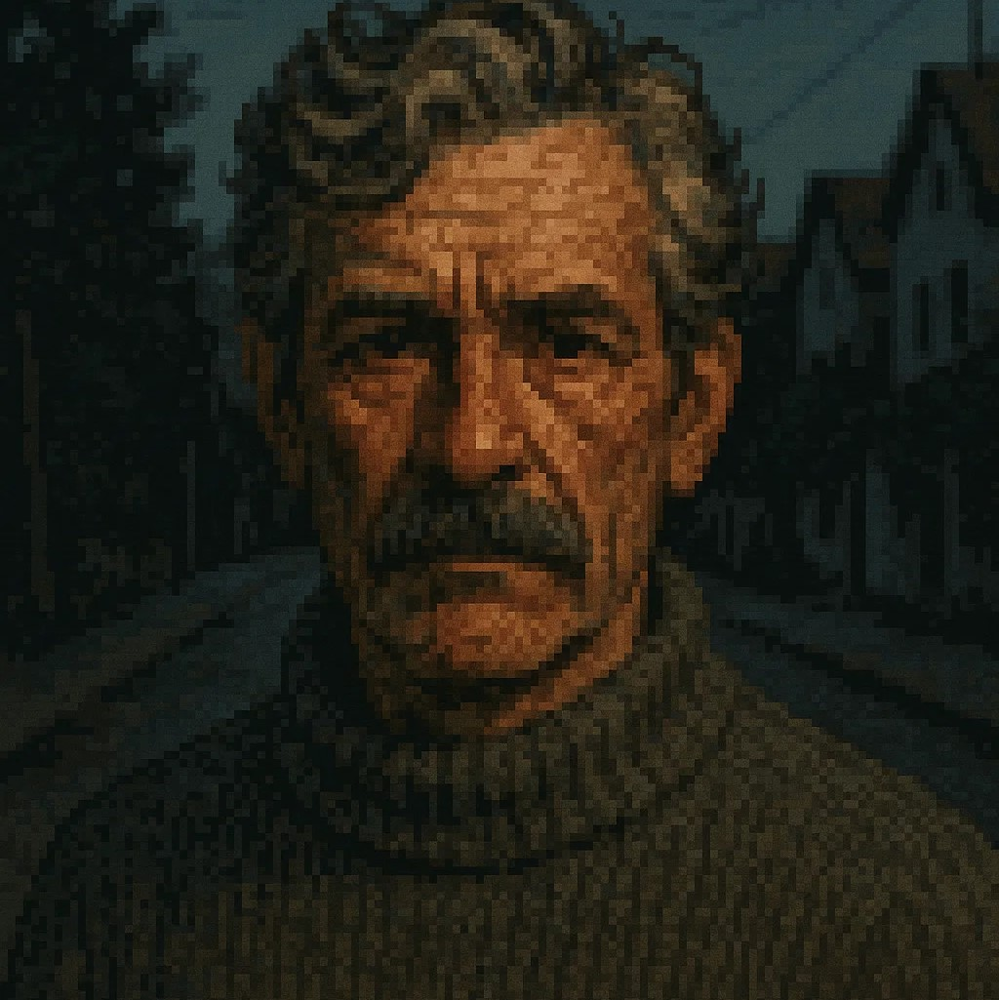

Luis, un hombre de 36 años, decidió visitar la antigua casa de sus padres con la intención de resolver algunos asuntos familiares, decidir qué hacer con la propiedad y, en parte, alejarse del dolor de su reciente ruptura con su expareja, Paula. La separación lo había dejado emocionalmente inestable, y en las últimas semanas no llevaba un rumbo claro en su vida. Uno de los pocos apoyos que tenía era un amigo cercano con quien solía reunirse cada fin de semana. Sin embargo, un sábado en particular, Luis no respondió llamadas, mensajes ni dio señales de vida. Preocupado, su amigo contactó a las autoridades para reportar la desaparición y expresar su temor de que algo le hubiera sucedido. La policía acudió a la casa donde se encontraba Luis y, al realizar la inspección, lo hallaron colgado en una de las habitaciones. Lo que en un inicio parecía un suicidio se tornó sospechoso: * Su teléfono móvil y varias pertenencias de valor habían desaparecido. * En el examen preliminar del cuerpo se encontraron marcas inusuales en brazos y torso, que sugerían forcejeo o algún tipo de agresión previa. La investigación quedó abierta, ya que las evidencias indicaban que la muerte pudo haber sido provocada, encubierta como un suicidio.

Luis Barreto (Víctima)
Edad: 36 años
Ocupación: Independiente / Trabajos temporales
Personalidad:Reservado, introspectivo, emocionalmente inestable tras la ruptura
Detalle relevante: Última vez visto con vida fue un jueves por la tarde en un minimarket cercano a la casa de sus padres.
Paula Díaz (Expareja)
Edad: 32 años
Ocupación: Secretaria administrativa
Personalidad:Distante, mantiene poco contacto con Luis desde la separación
Detalle relevante:Según testigos, discutieron fuertemente dos semanas antes del hecho.

Vicente Palmas (amigo de luis y Reportante)
Edad: 35 años
Ocupación:Conductor de reparto
Personalidad:Leal, preocupado por el bienestar de Luis
Detalle relevante:Fue quien dio aviso a las autoridades al no recibir respuesta durante todo un fin de semana.

Sr. Rubén Álvarez (Vecino testigo)
Edad: 57 años
Experiencia:18 años en la policía, especializado en homicidios
Detalle relevante: Afirma haber visto a una persona desconocida entrar a la casa de Luis la noche anterior al hallazgo.